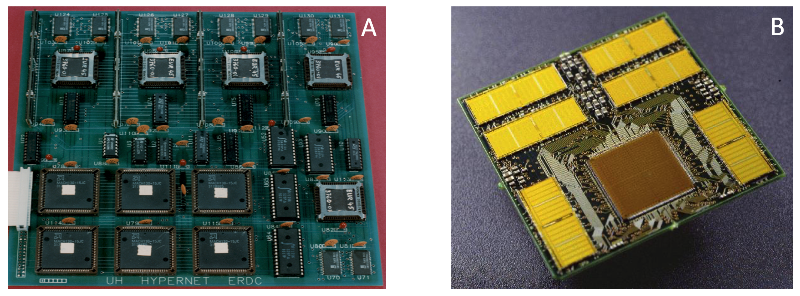

Preface
Hindu-Muslim clashes in India, the legacy of slavery in the US, attacks on immigrants in the UK, the president of Mexico - Claudia Sheinbaum - getting groped in public, Elon Musk’s trillion-dollar 2025-35 pay package, France going through four prime ministers in two years, and the emergence of dominant supercities around the world. These are just a few examples of inequality and polarization impacting every one of us, across the globe, all the time.
On a personal level, the last three generations of my family have each called a different country home. On top of that, I have lived roughly equal portions of my life in Iran, England, and America, three countries with complicated relationships (see Box 0.1 for more). “You teach best what you most need to learn” 1. I have desperately needed to understand - and deal-with - the Us versus Them ruptures of the Iranian revolution, Margaret Thatcher’s remaking of Britain, the AIDS epidemic, and the reshaping of the world since 9/11. This book is a summary of what I learned.
Experts in politics, economics, business, law, psychology, sociology, history, anthropology, etc. have identified a dizzying array of distinct and interacting causes. For example, economic and political polarization, which often reinforce each other 2–4, have been found to be driven by:
Globalization; de-industrialization; loss of colonies and empires; the end of the Cold War; fundamental limitations of Capitalism; consumerism; the impossibility of endless economic growth; the inexorable rise of bureaucracies and special interests; migration across racial, ethnic, and cultural divides; rapid growth of ultra-religious communities, decline of civic society, increasing individualism; generational conflict; loss of religious beliefs; resurgence of autocracy, corruption, and nepotism; geographic and urban-rural identity; online echo-chambers; the nationalization of news media and political agendas; people sorting themselves into opposing identities; alignment of previously unaligned values; people’s predilection to copy one another, ….
Human institutions (teams, communities, businesses, nations, etc.) involve many context-specific interactions and varied histories. So, the bewildering diversity of the proposed drivers of polarization is not surprising. But the avalanche of proposed causes is overwhelming. If every instance of polarization has its own array of complex, interacting drivers, what hope can we have of avoiding ever more extreme inequality, and damaging clashes between opposing camps?
No two systems involving human preferences and decisions can be identical, but pioneering research 5–10 suggests that viewing systems involving humans as complex dynamical systems can peel away some of the confusing detail and reveal surprising insights (see Appendix 1 for examples).
In this book, I draw on my 30-years of research at the intersection of biology and systems science to explain how and why polarization and inequality are a type of pattern-formation, a simple, self-organizing process that is essential to all life. This realization leads to the insight that – while constrained polarization is inevitable, and often useful – runaway polarization is analogous to terminal cancer. Luckily, viewing polarization as a pattern formation process points to potential cures that exploit well-established findings from multiple disciplines.
Polarization is usually defined as growing apart, but growing apart is only part of the story. Most notably, polarization also traps people in insular bubbles of “Us” and “Them”, and creates uneven playing fields.
In its simplest form, the underlying mechanism that amplifies small – sometimes random – amounts of inequality into polarization, is a self-reinforcing (positive) feedback loop. People on opposite sides of a polarized issue become trapped in self-reinforcing conditions that push them apart and are not easy to escape. Like drug addicts no longer in control of their “habit”, they become the victims of the invisible forces of feedback.
Feedback loops have long been studied by systems theorists, physicists, and engineers 1. They have also been shown to play important roles in economics 11–13, biology 14–16, and politics 17. But they can be difficult to understand without the aid of mathematics, and so tend to be side-stepped by researchers without a mathematical background.
My goal for this book is to explain – without using mathematics – what positive feedback loops really are, how they behave, how they come about naturally, how they cause both limited and runaway polarization, and finally, how we can detect and counter them. This last point is especially important because – as we will see – inequality and polarization cannot be rooted out without countering their underlying feedback loops. Positive feedback loops arise automatically whenever parts of a system (e.g. people) interact with each other widely. As a result, runaway polarization will arise inevitably whenever we do not counteract and limit positive feedback loops in our social, economic, political, and cultural systems.
My focus throughout the book is on the underlying common mechanism that drives all forms of polarization. As such, I will not attempt to dissect or debate specific forms of polarization. Instead, I will do my best to put insights from systems-theory in the context of what domain experts have already uncovered about the many forms of polarization. For topics not discussed in detail, boxes throughout the book, and the appendices at the end of the book, provide brief introductions and pointers to the literature.
The chapters that follow will explain how and why polarization can be seen as increasing inequality, how it relates to pattern formation in nature, and how feedback loops underlie all these processes. We will look at how Us versus Them conflicts arise, why they are so common, and why runaway polarization is akin to cancer. As we will see, Nobel-prize-winning experimental and theoretical studies have already established a framework for how to counter polarization effectively. The final section of the book draws on these insights to describe all the ways in which we can counteract and neutralize runaway polarization in all its forms.
Two appendices put the preceding discussions into a broader context. Appendix 1 provides an overview of pioneering research applying system dynamics approaches to polarization, while Appendix 2 provides examples and background information about the most common forms of polarization. If you are mathematically inclined, Appendix 3 provides a mathematical grounding for the topics discussed in the book. And if you are curious about how I came to write this book, see Box 0.1, which follows this preface.
Finally, a word on how to read this book. Polarization is ubiquitous and has many facets, which means we all have experiences of, and opinions about, some forms of inequality and polarization. The chances are then, that you will know more, and feel more strongly, about some of the topics in the coming chapters. And you may not have thought much about some of the other topics. I therefore recommend you browse the whole book next to decide what you most want to read, and in what order. Hopefully, the figures will provide you with intuitive first impressions.
To make the discussions of feedback and pattern formation in the coming chapters tangible, and show how these concepts can add to our understanding of polarization, here is a highly-abbreviated, concrete example:
In a 2010 book, the former World Bank economist Branko Milanovic argued that the root cause of the 2008 financial crisis in the US was income inequality 18. According to Milanovic, subprime mortgages, deregulation, questionable financial instruments, etc. exacerbated the crisis, but they did not create it. Rather, increasing concentration of wealth among top-earners in the US “generated much larger investable funds than could be profitably employed”, leading high net-worth individuals to resort to increasingly risky investments. Everything else followed.
But what caused the concentration of wealth in first place? Lower tax rates helped, but they are not the root cause, because pre-tax earnings also became concentrated among the wealthy 19. Likewise, deregulation facilitated risky investments, but risk-seekers are usually a minority 20,21, so what led to the kind of widespread risky behavior that caused the market crash? The answer in both cases is self-reinforcing feedback loops.
As Thomas Piketty showed in Capital In the Twenty-First Century 22, in the absence of redistributive policies and external factors, capital grows faster than the economy (Piketty’s famous “r > g” equation). The underlying reason is that, by default, unspent income from capital is reinvested, creating a compound-interest positive feedback loop 23 (more on compound-interest in Chapter 2). Piketty never uses the word “feedback” in his book. But, in Chapter 2, he verbally describes the central role of positive feedback in what he calls the “divergence” of wealth between labor and capital. Then in Chapter 12, he shows that larger capital endowments tend to have higher profit rates: the richer you are the faster your wealth grows, leading to ever-increasing “divergence” (aka polarization) of wealth over time.
In short, as the shock of the Second World War, and the redistributive effects of the New Deal faded away, feedback-mediated runaway wealth inequality increased. In the absence of New Deal style mega-projects and redistributive policies, wealth concentration led to reduced aggregate investment opportunities 24, which increased competition and risky bets.
Once borrowers started defaulting, another kind of positive feedback loop set in: a contagion of people copying each other’s panic-behavior; a mutually self-reinforcing feedback loop leading to herd-behavior 25.
Does it matter that feedback loops produced the inequality and the cascading failures at the heart of the 2008 US financial crisis? Absolutely, because – as we will see later in the book – measures to counteract polarization are doomed to fail in the long run as long as the underlying feedback loops remain intact.
Box 0.1. My Path to This Book
Ironically, my most formative experience of “otherness” and inequality was not related to the fact that my grandparents (on both sides) had escaped to Iran during the 1917 Russian revolution and spoke Farsi with a strong accent.
All through primary-school in Iran, I was a goody-two-shoes teacher’s pet. I was the class prefect, received many commendations, and won the “Student of the Year” prize every year. But after the second year, I started to dread the annual prizes. I realized that the kid who got the “second-best” prize every year lived in a one-room mud-shack with five other siblings. I knew this because I walked past the shack on my way to school every day.
We lived in a newly-developed, leafy part of the town close to the Shah’s sprawling summer gardens. The house across the street from the shack was where my sister’s best friend lived. It was huge, covered in imported Italian marble, and had an immaculately-kept swimming pool in the backyard.
In my first year of walking to school, I had barely noticed the care-taker’s hut on the “empty” plot of land belonging to an absentee investor. It was only because the kid kept coming second in the annual prize that I noticed him and his family’s shack.
I could not imagine how a whole family could live in a single room. I tried to get to know the boy (I’ll call him Abdi). We were in the same year, but different classes. Every time I tried to strike a conversation with Abdi, I couldn’t think what to say that didn’t sound patronizing or belittling. I gave up, all too easily, and missed an opportunity to grow my world; to feel more at home in the ninety-something percent of the world that did not share my family’s privileges 2.
Asking around, I learned that Abdi’s father had been a manual laborer who had injured his back and was bed-ridden. It turned out my mother had been paying Abdi’s mother to hand-wash our sheets even though we had a washing machine. “They need the income, and she is much more careful and thorough than the washing machine”, my mother insisted.
I had thought of the prize almost as a birthright, a confirmation of my (assumed) natural superiority. But once I had noticed Abdi and his home, I could not stop asking myself: Who deserved the best-student prize more? I certainly qualified. I had perfect scores and glowing teacher reports to show for it. But I also had my own room, cupboards full of educational toys, and a family who nurtured a love of learning in me. Abdi had illiterate parents and could barely afford pencil and paper. Wasn’t his achievement much greater than mine? If we had somehow been switched at birth, would I still be winning the best-student prize every year? As we grew up, which of us deserved the best educational opportunities? I, because I had better grades and reports, or Abdi who was probably more determined and more talented, given how well he was overcoming his family’s disadvantages.
I lost track of Abdi when I was sent to high school in England. But I am pretty sure he did not have the opportunity to be privately educated abroad. No matter how well Abdi did in subsequent years, it is very unlikely that he had a fraction of the educational opportunities I had in England. Close to a million Iranians of my generation were severely wounded or killed in the Iran-Iraq war while I was in college and graduate school buttressing my privileged upbringing.
Even before I could read, once a week, my sister would drive me to the only children’s library in our town. The head librarian, a cousin of mine, ran a kid’s club where we learned about great scientists, poets, and philosophers. We put on shadow-puppet shows and made our own cartoon animations. An uncle taught me to play chess when I was five. Seeing my interest, my older brother would give me dramatic move-by-move critiques of the greatest chess games in history. Through these, and many other actions, my family enriched me in ways that are not measurable in monetary terms. Nothing comparable to all this nurturing was available to Abdi. And this is why I think we need to see and address inequality in all the different dimensions in which it arises.
For good reasons, gender inequality, identity politics, wealth concentration, and systemic racism have dominated the public discourse about inequality and polarization. But to me, these are just the tip of a much more pervasive phenomenon that ensures unequal opportunities and outcomes in housing, healthcare, education, climate-change effects, immigration, colonial legacies, abortion, gender-identity, sexually-transmitted diseases, addiction, clean water, safe living conditions… The list is endless and overwhelming. Setting scientific reasoning aside for a moment, here is why I think inaction is not an option.
I was in high school in England when the Iranian revolution happened. In the months following the fall of the Shah, a large number of Iranians fled the country. A friend at school asked me if I could help his new Iranian neighbors who didn’t speak much English. I did. Word spread, and I found myself suddenly in demand as an interpreter and guide to newly arrived Iranians trying to find housing, deal with banks, navigate immigration services, and so on. In the process, I became privy to the lives of diverse Iranians, each of whom saw themselves as a threatened ethnic, political, social, linguistic, religious, or cultural minority.
It was shocking and disorienting for me to discover how divided the Iran of my childhood had been. The Iranians I was meeting identified as Pahlavi and pre-Pahlavi royals, republicans, socialists, communists, dissident Islamic revolutionaries, and Western-educated intellectuals and artists. Critically, each faction considered themselves misunderstood and victimized, and dismissed the others variously as wrong-headed, uncouth, devious, backward, corrupt, self-serving, or foreign puppets. Adding to these schisms were all the ethnic/religious minorities that make up the majority in Iran: Arabs, Kurds, Lors, Turks, …, Zoroastrians, Assyrians, Armenians, Baha’is, Jews, Sunni Muslims, …; each group insulated in its own people-like-us communities; each carrying their own grievances and frustrations.
The experience has left me haunted by the thought that we doom ourselves to wars and revolutions when we hide in our echo-chambers, and refuse to see the value of different perspectives within our society. As America becomes more and more polarized, I worry that my adopted home country maybe heading in the same direction as the Iran of my childhood.
Looking back on my career in systems biology, I am struck by how my research has mirrored my quest to feel at home in three different countries. I studied microelectronic systems engineering because I had grown up loving Isaac Asimov’s robot stories and wanted to build artificial brains. In the early 1990s, my team built several microelectronic AI systems (see Figure B0.1). Eventually, I came to realize that we did not understand biological brains well-enough to build even insect-level artificial brains 3. In 1996, I spent a sabbatical year at Caltech trying to learn all I could about the evolution of neural systems, only to learn that very little was known. Disappointed, I switched the focus of my research for the rest of my career to applying my system engineering skills to understanding biological systems. At first, I studied embryonic development in simple organisms 26,27. But I gradually switched my focus to human biology, and the question of how immune cells are constantly and reliably created in the in adult human bone marrows 28,29. Eventually, this led me to studies of cancer and immunology in the last decade and half of my career 30,31.

Figure B0.1. Example AI systems built by my team and collaborators 1990-1996. The system in panel A was an 11-inch-long Personal-Computer board with custom-built microchips. It had 10,000 artificial neurons with programmable connectivity and five different learning algorithms. The system in B is the next-generation version of the same system. It was small-enough to fit in a hand. Sadly, theoretical understanding of neural networks (AI) in the 1990s was limited to applications such as reading hand-written text. Disappointed, I abandoned the project.
References
1. Bach, R. Illusions: The Adventures of a Reluctant Messiah. (Dell Publishing, 1977).
2. Rau, E. G. & Stokes, S. Income Inequality and the Erosion of Democracy in the Twenty-First Century. Proceedings of the National Academy of Sciences, USA 122, e2422543121 (2024).
3. Stewart, A. J. et al. Polarization Under Rising Inequality and Economic Decline. Science Advances 6, eabd4201 (2020).
4. Keefer, P. & Knack, S. Polarization, Politics and Property Rights: Links Between Inequality and Growth. (2000).
5. Coleman, P. T. The Five Percent: Finding Solutions to Seemingly Impossible Conflicts. (Public Affairs, 2011).
6. Coleman, P. T. The Way Out: How to Overcome Toxic Polarization. (Columbia University Press, 2021).
7. Macy, M. W., Ma, M., Tabin, D. R., Gao, J. & Szymanski, B. Polarization and Tipping Points. Proceedings of the National Academy of Sciences, USA 118, e2102144118 (2021).
8. Axelrod, R., Daymude, J. J. & Forrest, S. Preventing Extreme Polarization of Political Attitudes. Proceedings of the National Academy of Sciences 118, e2102139118 (2021).
9. Leonard, N. E., Lipsitz, K., Bizaeva, A., Franci, A. & Lelkes, Y. The Nonlinear Feedback Dynamics of Asymmetric Political Polarization. Proceedings of the National Academy of Science, USA 118, e2102149118 (2021).
10. Vasconcelosa, V. V. et al. Segregation and Clustering of Preferences Erode Socially Beneficial Coordination. Proceedings of the National Academy of Sciences 118, e2102153118 (2021).
11. Arthur, W. B. On Competing Technologies and Historical Small Events: The Dynamics of Choice under Increasing Returns. (1983).
12. Arthur, W. B. Increasing Returns and Path Dependence in the Economy. (Michigan University Press, 1994).
13. Sornette, D. & Cauwels, P. Financial bubbles: mechanisms and diagnostics. Review of Behavioral Economics 2, 279–305 (2015).
14. Thomas, R. & D’Ari, R. Biological Feedback. (CRC Press, 1990).
15. Ferrell, J. E. & Machleder, E. M. The Biochemical Basis of an All-or-None Cell Fate Switch in Xenopus Oocytes. Science 280, 895–898 (1998).
16. Zeron, E. S. Positive and Negative Feedback in Engineering and Biology. Mathematical Modeling of Natural Phenomena 3, 67–84 (2008).
17. Pierson, P. Increasing Returns, Path Dependence, and the Study of Politics. The American Political Science Review 94, 251–267 (2000).
18. Milanovic, B. The Haves and the Have-Nots: A Brief and Idiosyncratic History of Global Inequality. (Basic Books, 2010).
19. Noah, T. The Great Divergence: America’s Growing Inequality Crisis and What We Can Do About It. (Bloomsbury Press, 2012).
20. Ayton, P., Bernile, G., Bucciol, A. & Zarri, L. The Impact of Life Experiences on Risk Taking. Journal Of Economic Psychology 79, 102274 (2020).
21. Brooks, C. & Williams, L. People Are People: A Comparative Analysis of Risk Attitudes Across Europe. International Journal of Finance and Economics 29, 3545–3566 (2024).
22. Piketty, T. Capital in the Twenty-First Century. (Harvard University Press, 2014).
23. Sornette, D. & Cauwels, P. Financial Bubbles: Mechanisms and Diagnostics. Review of Behavioral Economics 2, 279–305 (2015).
24. Brueckner, M. & Lederman, D. Inequality and Economic Growth The Role of Initial Income. (2018).
25. Sornette, D. Why Stock Markets Crash: Critical Events in Complex Financial Systems. (Princeton University Press, 2003).
26. Davidson, E. H. & et al. A genomic regulatory network for development. Science 295, 1669–1678 (2002).
27. Yuh, C. H., Bolouri, H. & Davidson, E. H. Genomic Cis-Regulatory Logic: Experimental and Computational Analysis of a Sea Urchin Gene. Science 279, 1896–1902 (1998).
28. Georgescu, C., Longabaugh, W. J. R. & et al. A Gene Regulatory Network Armature for T Lymphocyte Specification. Proceedngs of the National Academy of Sciences of the USA 105, 20100–20105 (2008).
29. Gilchrist, M. Systems Biology Approaches Identify ATF3 as a Negative Regulator of Toll-Like Receptor 4. Nature 441, 103–112 (2006).
30. Bolouri, H. et al. The Molecular Landscape of Pediatric Acute Myeloid Leukemia Reveals Recurrent Structural Alterations and Age-Specific Mutational Interactions. Nature Medicine 24, 103–112 (2018).
31. Bolouri, H. et al. Inflammatory Bone Marrow Signaling in Pediatric Acute Myeloid Leukemia Distinguishes Patients with Poor Outcomes. Nature Communications 13, 7186 (2022).